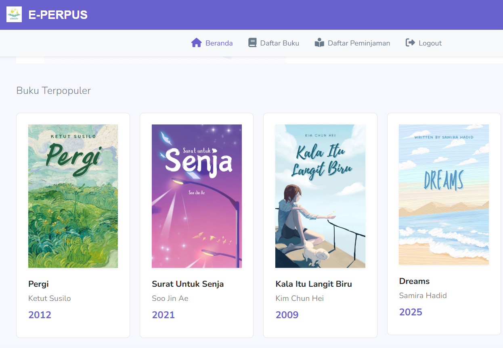

Experience
Website E-Bakery

E-Bakery: Desain UI/UX untuk Perpustakaan Digital
Solusi Desain:
- Halaman Depan yang Edukatif: Menyapa pengguna dengan pesan kesehatan dan kualitas ("Membangun Indonesia Sehat").
- Katalog Produk Transparan: Menampilkan setiap roti dengan foto berkualitas, harga, dan informasi berat yang jelas.
- Poin Kepercayaan: Bagian "Mengapa Memilih Kami?" menyoroti keunggulan seperti sertifikasi halal dan kandungan gizi.
- Checkout Sederhana: Formulir checkout minimalis untuk proses pembelian cepat dan tanpa hambatan.
Website E-Perpus

Solusi Desain:
- Antarmuka Bersih & Navigasi Mudah: Dashboard sambutan yang jelas dan bilah navigasi konsisten di setiap halaman.
- Tampilan Buku yang Menarik: Koleksi buku populer dan daftar lengkap dengan cover buku untuk kemudahan penjelajahan.
- Proses Peminjaman Sederhana: Feedback instan dengan pop-up "Success!" setelah buku dipinjam.
- Desain Minimalis & Fokus Konten: Palet warna tenang dan tata letak bersih untuk menonjolkan koleksi buku.